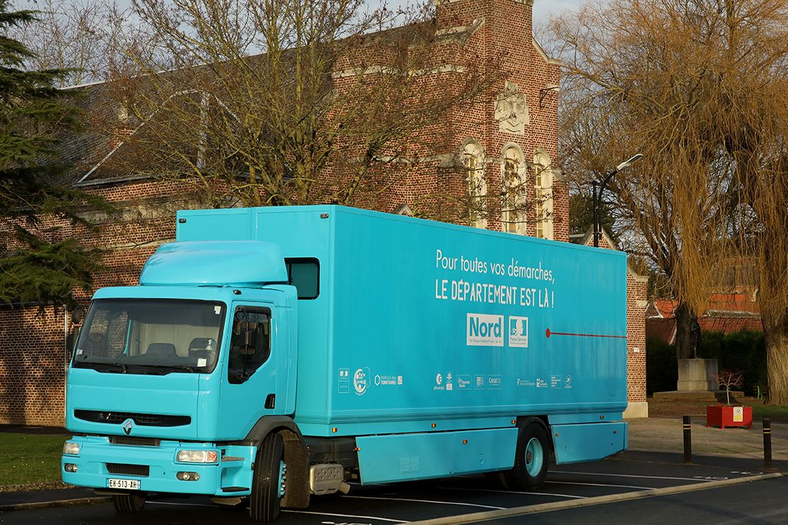
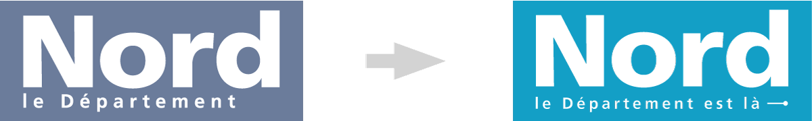

Le département initie un mouvement autour du hashtag #Cetététjevisitelenord pour soutenir les acteurs locaux et redécouvrir son patrimoine culturel et naturel.
Le Nord est là pour vos vacances, à vous de choisir ...
Téléchargez les visuels de la campagne (ZIP 1,9 Mo)
Et aussi...
La signature a évolué pour incarner la vocation du Département du Nord et traduire son ambition. En apparence, un petit changement lexical mais un grand changement de sens.
Le Département ne se contente pas de signifier son existence, il affirme ses engagements.
Un engagement pour plus de proximité avec les habitants : être là concrètement au quotidien !
Les engagements du territoire : le Nord est là !
Un engagement qui s'appuie sur le talent de nos agents : des agents là pour le Département !
Le logotype passe du gris à un bleu lumineux. Cette évolution est le parfait symbole d’un Département qui a retrouvé des moyens d’action, et qui affiche fièrement le résultat des efforts consentis. Ce bleu renforce la visibilité de l’institution et facilitera son appropriation par les habitants.

Téléchargez le guide de la marque le nord (PDF 1,2 Mo)

Téléchargez le logo du Département du Nord (PNG 17 Ko)
Téléchargez le logo noir du Département du Nord (PNG 17 Ko)
Téléchargez le logo blanc du Département du Nord (PNG 17 Ko)
{kind=link}